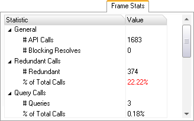

The "Frame Stats" tab in the Scrubber GL displays statistics about the captured frame.

Basic usage:
• Capture a frame from the connected application.
• Statistics highlighted in red may be significantly affecting performance.